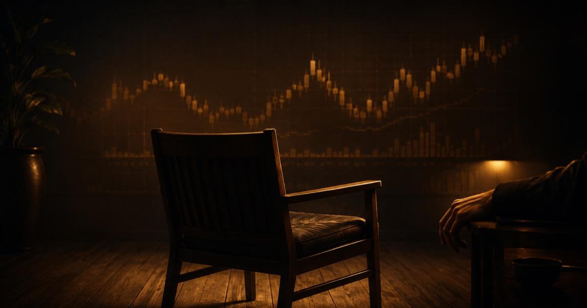

A while back I canceled a sell setup our community had been watching. The plan was clean on paper. But the entry I wanted never came, the market started chopping sideways, and the honest thing to do was step away. I posted it plainly: we'll wait for a better opportunity. Within the hour I got the same question I always get in that moment, "Raphael, aren't we missing out?"
I understand the feeling completely. You've done your homework, your finger is on the trigger, the chart is right in front of you, and then you… don't. It feels like weakness. It feels like the one time you sat still is the time the market will run without you. So let me say the thing I wish someone had drilled into me years earlier: that discomfort you feel when you skip a trade is not a sign you're doing it wrong. Very often it's the clearest sign you're finally doing it right.
This is the whole reason I want to talk about why the best trades are the ones you don't take. Not the winners you brag about. The ones you quietly refused. Because in this business, the account isn't usually destroyed by the trades you miss. It's bled dry by the mediocre ones you take out of boredom, ego, or fear of being left behind.
The market spends most of its life saying "not yet"
Here's something charts don't advertise: for large stretches of time, gold isn't trending anywhere worth trading. It's accumulating. Consolidating. Coiling up in a tight range while big money quietly builds positions. During those phases the price chops up and down, stops out the impatient, and rewards almost nobody who tries to force direction onto it.
We recently warned our members about exactly this, a choppy accumulation phase where the sensible move was to widen your thinking, respect your stops, and expect noise instead of clean moves. And I'll be honest, those messages are never the popular ones. Nobody screenshots "the market is unclear right now, protect yourself." But that message has saved more capital in our community than any single winning call ever has.
If you accept that markets spend maybe seventy or eighty percent of their time in conditions that don't suit your edge, then a hard truth follows. Most of the time, the correct action is no action. Sitting out isn't the interruption between real trading. Sitting out is most of the job.
FOMO is just your account's fear talking
Let's name the real enemy, because it isn't the market. It's the fear of missing out, that hot, restless feeling when price starts moving and you're not in it. FOMO whispers that everyone else is getting rich while you sit on your hands. It tells you a flat setup is "good enough." It talks you into chasing a move that's already halfway done.
I want to be direct with you, because glossing over this would be dishonest: most retail traders lose money trading these markets, and FOMO is one of the biggest reasons why. It's not that they can't read a chart. It's that they can't tolerate the emptiness of doing nothing, so they manufacture a reason to click. A low-quality entry. A trade with no clear invalidation. A position sized on hope. Each one feels small in the moment. Stacked over a hundred trades, they're the difference between surviving this game and quietly leaving it.
The skipped trade is the antidote. When you cancel a setup that no longer meets your standard, you're not losing an opportunity. You're refusing to pay for a lottery ticket you didn't want. That refusal is an act of capital protection, full stop.
Stop counting trades. Start counting quality.
One idea changed how I sit in front of a chart more than any indicator ever did: pros don't try to predict the next trade. They build an edge over a hundred trades.
That single shift takes all the pressure off any one setup. If your results only reveal themselves across a long series of trades, then no single skipped opportunity can matter very much. There's always another. Gold will still be here tomorrow, next week, next quarter. The market is not a train leaving the station. It's an ocean, and it does not run out of waves.
So the question stops being "will this trade win?", nobody knows that, and becomes "does this setup deserve a place in my next hundred?" Most don't. When you hold every potential trade to that standard, you naturally take fewer of them, and the ones you do take are cleaner, calmer, better defined. You've stopped playing the volume game and started playing the selectivity game. And selectivity, not prediction, is where the professional actually lives.

A skipped trade is a decision, not an accident
There's a difference between not taking a trade because you froze, and not taking a trade because you chose. The first is fear. The second is discipline. From the outside they look identical, in both cases you did nothing. But internally they're opposites, and the market can eventually tell which one you are.
A disciplined skip has reasons you could say out loud. The entry didn't come to my level, so I let it go. The structure got messy, so I stood down. The risk-to-reward wasn't there, so I passed. Conditions were the chop I'd been warned about, so I waited. None of those are hesitation. Each one is a rule doing its job. When I cancel a signal and tell the community "we'll wait for a better opportunity," I'm not being indecisive. I'm being decisive about my standards.
The trap to avoid is the opposite dressed up as patience, freezing on a genuinely good, well-defined setup because you're scared of losing. That's not selectivity, that's paralysis, and it needs a different fix (smaller size, clearer rules, and honest journaling). Knowing the difference between a disciplined skip and a fearful freeze is one of the quiet skills that separates traders who last from traders who don't.
Why I post the trades I don't take
I run our free Telegram channel on one kind of transparency: I show the reasoning behind every idea, the level, the entry, the stop, and the why, including the setups I pass on and exactly why I skipped them. No idea is a guaranteed win, and I'll never pretend one is. I post the trades I didn't take, and the setups I canceled, right alongside the ones I did share, so you can learn to read gold for yourself. Not because it looks impressive. Frankly, "I did nothing today and I'm glad" is the least exciting thing you can publish to almost nine thousand traders.
I do it because I think the most valuable thing I can model isn't a good entry. It's good restraint. Anyone can show you a green trade after the fact. Far fewer people will show you the setup they walked away from and calmly explain why walking away was the win. If all a member ever sees is action, action, action, we're quietly teaching them that doing nothing is failure. It isn't. Some of the best decisions in my trading history don't show up as a single dollar of profit or loss, because they were trades I never made.
Past performance never guarantees future results, and I'll never pretend a skipped trade "would have" done anything, I don't know, and neither does anyone else. What I do know is that the habit of skipping badly is expensive, and the habit of skipping well compounds quietly in your favor over a long career.
Read the environment first
Before hunting entries, ask what phase the market is in. Trending with room to run, or accumulating and chopping? If it's a consolidation phase, lower your expectations and expect most setups to fail your standard. Naming the environment out loud kills half of all impulsive trades.
Write the entry before you need it
Decide your level and your invalidation in advance, in words. If price doesn't come to your level, there is no trade, not a "close enough" version of it. Chasing a level that never arrived is not the same setup, and pretending otherwise is how discipline dies.
Run the "next hundred" test
Ask one question of every setup: does this deserve a place in my next hundred trades? If you're hesitating to answer yes, that hesitation is your answer. A maybe is a no. There is always another wave.
Log the skip like it's a trade
When you pass, journal it: what you saw, why you stood down, how you felt. Treat a good skip as a completed, successful decision, because it is. Over time your journal will show you that patience, not prediction, is what actually protected your account.
Doing nothing is a position too
I want to leave you with a reframe that took me far too long to internalise. Cash is a position. When you're flat and waiting, you are not "not trading." You are holding the safest, most flexible position available to you, fully loaded and ready for the setup that actually earns your money. Every day you protect your capital by refusing junk is a day you get to show up again tomorrow. And showing up again is the entire game.
Trading isn't a test of how many trades you can find. It's a test of how many you can turn down. The market will always offer you something to do. Your edge, the real one, the durable one, lives in how much of it you're willing to let pass by.
So the next time you cancel a setup and that familiar FOMO creeps in, try to hear it for what it is. Not a missed opportunity. A protected one.
Frequently Asked Questions
Isn't skipping trades just fear of losing in disguise?
It can be, and that's worth being honest about with yourself. The difference is reasons. A disciplined skip has a rule behind it you could say out loud, the entry didn't come, the structure was messy, the conditions were choppy. Freezing on a clean, well-defined setup because you're scared is a different problem that needs smaller size and clearer rules, not more caution. Journaling every skip is the best way to tell the two apart over time.
How do I handle the FOMO when the market moves without me?
Accept that it will happen constantly, and that it's normal. The reframe that helps most is remembering the market doesn't run out of waves, missing one move does not close the door on the next. Your results come from a long series of trades, not any single one, so no missed move can matter as much as your fear says it does. Most traders lose money precisely by chasing these moves, so sitting them out is often the winning choice, not the losing one.
If I trade less, am I falling behind more active traders?
Activity and progress aren't the same thing in this business. More trades usually means more low-quality trades, more costs, and more emotional decisions, not more skill. Professionals are defined by selectivity, not volume. Trading fewer, higher-standard setups and protecting your capital in between is a slower, quieter path, and for most people it's the only one that survives the long run. None of this is financial advice; it's simply how I try to think about risk.
About the Author
Raphael, founder of Black Gold Market
I run a free Telegram channel of nearly 8,900 traders around one plain idea: protect your capital first, master your process second, and let growth take care of itself over the long game. Each day I post gold analysis and trade ideas, the level, entry, stop, and the reasoning behind each, because I'd rather teach the thinking than hand out calls. Free to follow, with an optional Kit. No hype, no promises, just the discipline that keeps people in the game long enough to learn it.
Risk disclaimer: Trading gold, forex and CFDs carries a substantial risk of loss and is not suitable for everyone. The large majority of retail traders lose money. Nothing in this article is financial, investment or trading advice, and no outcome is promised or implied. Any numbers mentioned are illustrative only and are not entry, stop-loss or take-profit recommendations. Past performance does not guarantee future results. Only ever risk capital you can afford to lose, and consider seeking advice from a licensed professional before making financial decisions.
If this way of thinking speaks to you, I put the core of it into a free guide called The Sustainable Trader's Blueprint, a calm, practical starting point on patience and risk, with nothing to buy. You can pick it up any time at /blueprint/, and you're always welcome to sit in with our Telegram community, read the real charts, and watch how we think through the trades we take and the ones we don't. No pressure, no rush. The market will still be here when you're ready.